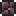

Грязевой блок (Mud Block) — это блок, схожий с обычной землёй, но чуть темнее. Самый распространённый блок в наземных и подземных джунглях, а также в биоме светящихся грибов. На грязь можно посадить семена травы джунглей и семена грибов. Её можно сделать из земли, находясь в воде или возле неё. Также с помощью грязи можно делать хлорофитовые фермы.
Рецепт
| Предмет | Ингредиенты | Место создания | Примечание |
|---|---|---|---|
 Грязевой блок х1 Грязевой блок х1 |
 Земляной блок х1 Земляной блок х1
|
Рядом с водой | Блок |
Материал для
| Предмет | Ингредиенты | Место создания | Примечание |
|---|---|---|---|
| Аргиллитовый кирпич x1 |
 Каменный блок х1
Грязевой блок х1 Каменный блок х1
Грязевой блок х1
|

|
Блок |
Факты
-
Она не может быть заражена искажением (может быть превращена им в землю).
-
Грязь нельзя передвинуть земляным жезлом.
-
Если посадить на грязь траву джунглей, то можно получить ферму деревьев, так как в джунглях деревья растут без семян.
-
На грязевом блоке может распространяться хлорофитовая руда.
История
-
Версия 1.0.5:у грязевого блока появилась возможность падения.
-
Версия 1.0.6:у грязевого блока убрана возможность падения.
-
Версия 1.1:грязевой блок можно создать из земли, если стоять рядом с водой. Грязевой блок стал одним из компонентов для создания аргиллитового кирпича.